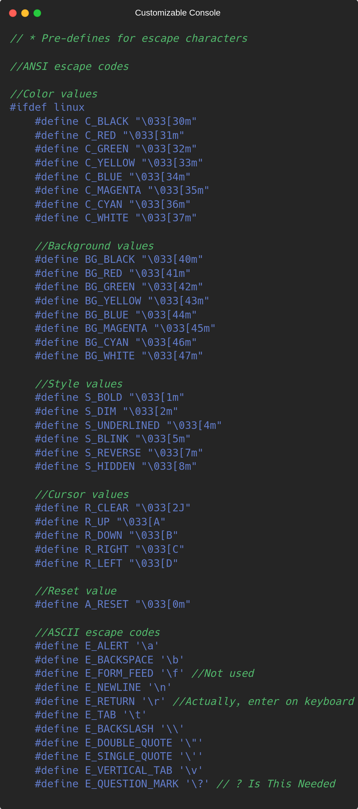

Customizable Console - Documentation
What is Linux?
Linux is an operating system that is created by Linus Torvalds in 1991. This operating system is completely open source. It's mostly used in industry, embedded systems and more in IoT. So, it's popular among software developers, our library is fully functional in linux platform.
In this section of documentation, we'll look at pre-processor defines for our library on linux platform. We defined our attributes and properties on the beginning of code. Our attributes and properties are mostly used as a parameter or an argument to other functions included in our library. If you don't know what pre-processor is, it's a set of instructions for compiler to understand before compiling the code.
Now, before looking at definitions, let's first look at what are ANSII escape sequences, these are some text-styling settings for UNIX-like systems. These are just printed into terminal or console just like a default text, but terminal or console has builtin settings to check output buffer and see if there's a property. If it founds a property, it changes it's current attribute. They're mostly look like this:
ESCAPE_CHARACTER[NUMBER_OF_PROPERTY.
We use C language's escape character, so we'll use:
\033[NUMBER_OF_PROPERTY
Now, we can take a look at our definitions.

You don't have to learn all of these values, writing their name in code is enough, so these will save your time a lot.
Linux Functions